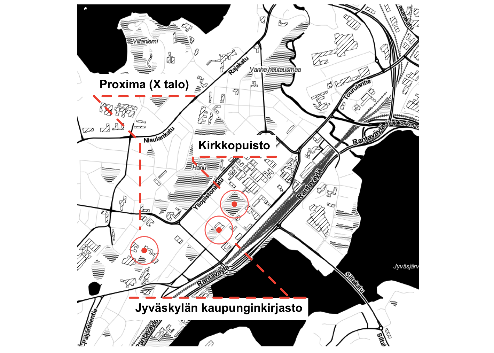

Voitte lukea kirjat suomeksi ja voitte alkaa nyt

Selkosuomeksi kirjat on kirjoitettu helpolla kielellä. Nämä kirjat eivät ole kuin lastenkirjat. Selkosuomeksi kirjat ovat tavallisia, joskus aikuisille, kirjat on mukautettu yleiskieleltä selkokielelle.
Löydätte lisää informaatio Hanna Männikkölahden sivusta: https://privatefinnishlessons.com/books/
Lukea on hyvä väline koska voitte harjoittaa lukemista, puhumista ja ymmärtämistä. Esimerkiksi, voitte lukea teksti ystävälle tai yksin.
Jyväskylän kaupunginkirjastolla on monta selkosuomeksi kirjat!
Jos haluatte lainata kirja kirjastosta, tarvitsette kirjastokortti. Tarvitsette ottaa kuvallinen henkilökortti kirjastoon jotta he tekevät kirjastokortti sinulle. Ensimmäinen kortti on ilmainen. Ettekö tiedä missä kirjasto on? Näette karttassa.

Nyt luen “Toppatakin alla on sydän”. Kirjalla on monta pieni tekstit ja yritän lukea yksi teksti joka päivä. En ymmärrä kaikki sanat, ajattelen että ymmärtää tekstin idea riittää. Kun en ymmärrä sanat, kirjoitan niitä ja haen mitä ne tarkoittavat sanakirjasta.
Tein tämä posterin R:n kanssa. Käytin nämä paketit:
Allaire, JJ, Yihui Xie, Jonathan McPherson, Javier Luraschi, Kevin Ushey, Aron Atkins, Hadley Wickham, Joe Cheng, Winston Chang, and Richard Iannone. 2019. Rmarkdown: Dynamic Documents for R. https://CRAN.R-project.org/package=rmarkdown.
Arnold, Jeffrey B. 2019. Ggthemes: Extra Themes, Scales and Geoms for ’Ggplot2’. https://CRAN.R-project.org/package=ggthemes.
Kahle, David, Hadley Wickham, and Scott Jackson. 2019. Ggmap: Spatial Visualization with Ggplot2. https://CRAN.R-project.org/package=ggmap.
Müller, Kirill. 2017. Here: A Simpler Way to Find Your Files. https://CRAN.R-project.org/package=here.
Müller, Kirill, and Hadley Wickham. 2019. Tibble: Simple Data Frames. https://CRAN.R-project.org/package=tibble.
Pedersen, Thomas Lin. 2019. Ggforce: Accelerating ’Ggplot2’. https://CRAN.R-project.org/package=ggforce.
R Core Team. 2019. R: A Language and Environment for Statistical Computing. Vienna, Austria: R Foundation for Statistical Computing. https://www.R-project.org/.
Thorne, Brent. 2019. Posterdown: Generate Pdf Conference Posters Using R Markdown. https://CRAN.R-project.org/package=posterdown.
Wickham, Hadley, Winston Chang, Lionel Henry, Thomas Lin Pedersen, Kohske Takahashi, Claus Wilke, Kara Woo, and Hiroaki Yutani. 2019. Ggplot2: Create Elegant Data Visualisations Using the Grammar of Graphics. https://CRAN.R-project.org/package=ggplot2.
Wickham, Hadley, Jim Hester, and Romain Francois. 2018. Readr: Read Rectangular Text Data. https://CRAN.R-project.org/package=readr.
Xie, Yihui. 2019. Knitr: A General-Purpose Package for Dynamic Report Generation in R. https://CRAN.R-project.org/package=knitr.
Xie, Yihui, Romain Lesur, and Brent Thorne. 2019. Pagedown: Paginate the Html Output of R Markdown with Css for Print. https://CRAN.R-project.org/package=pagedown.
Voitte lukea kirjat suomeksi ja voitte alkaa nyt